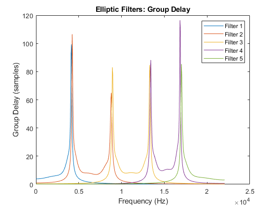
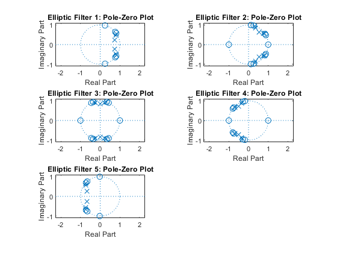

function [b1,a1,H1,Grp1,h1,b2,a2,H2,Grp2,h2,y,S]=fname5
[s,Fs]=audioread('RollingInTheDeep.wav');
Rp=0.5;
Rs=30;
if size(s,2) > 1
s = mean(s,2);
end
b1 = cell(5,1);
a1 = cell(5,1);
H1 = zeros(512,5);
Grp1 = zeros(512,5);
h1 = zeros(120,5);
f = linspace(0, Fs/2, 512);
Wp1 = 4100 / (Fs/2);
Ws1 = 4500 / (Fs/2);
[n1, Wn1] = cheb1ord(Wp1, Ws1, Rp, Rs);
[b1{1}, a1{1}] = cheby1(n1, Rp, Wn1, 'low');
[H1(:,1), ~] = freqz(b1{1}, a1{1}, 512, Fs);
[Grp1(:,1), ~] = grpdelay(b1{1}, a1{1}, 512, Fs);
h1(:,1) = impz(b1{1}, a1{1}, 120);
Wp2 = [4250 8750] / (Fs/2);
Ws2 = [3900 9350] / (Fs/2);
[n2, Wn2] = cheb1ord(Wp2, Ws2, Rp, Rs);
[b1{2}, a1{2}] = cheby1(n2, Rp, Wn2, 'bandpass');
[H1(:,2), ~] = freqz(b1{2}, a1{2}, 512, Fs);
[Grp1(:,2), ~] = grpdelay(b1{2}, a1{2}, 512, Fs);
h1(:,2) = impz(b1{2}, a1{2}, 120);
Wp3 = [8950 13250] / (Fs/2);
Ws3 = [8350 13650] / (Fs/2);
[n3, Wn3] = cheb1ord(Wp3, Ws3, Rp, Rs);
[b1{3}, a1{3}] = cheby1(n3, Rp, Wn3, 'bandpass');
[H1(:,3), ~] = freqz(b1{3}, a1{3}, 512, Fs);
[Grp1(:,3), ~] = grpdelay(b1{3}, a1{3}, 512, Fs);
h1(:,3) = impz(b1{3}, a1{3}, 120);
Wp4 = [13400 16800] / (Fs/2);
Ws4 = [13000 17500] / (Fs/2);
[n4, Wn4] = cheb1ord(Wp4, Ws4, Rp, Rs);
[b1{4}, a1{4}] = cheby1(n4, Rp, Wn4, 'bandpass');
[H1(:,4), ~] = freqz(b1{4}, a1{4}, 512, Fs);
[Grp1(:,4), ~] = grpdelay(b1{4}, a1{4}, 512, Fs);
h1(:,4) = impz(b1{4}, a1{4}, 120);
Wp5 = 17000 / (Fs/2);
Ws5 = 17400 / (Fs/2);
[n5, Wn5] = cheb1ord(Wp5, Ws5, Rp, Rs);
[b1{5}, a1{5}] = cheby1(n5, Rp, Wn5, 'high');
[H1(:,5), ~] = freqz(b1{5}, a1{5}, 512, Fs);
[Grp1(:,5), ~] = grpdelay(b1{5}, a1{5}, 512, Fs);
h1(:,5) = impz(b1{5}, a1{5}, 120);
figure;
subplot(2,1,1);
for i = 1:5
plot(f, 20*log10(abs(H1(:,i))));
hold on;
end
title('Figure 1(a): Magnitude Spectrum');
xlabel('Frequency (Hz)');
ylabel('Magnitude (dB)');
legend('Filter 1', 'Filter 2', 'Filter 3', 'Filter 4', 'Filter 5');
hold off;
subplot(2,1,2);
for i = 1:5
plot(f, angle(H1(:,i)));
hold on;
end
title('(b): Phase Spectrum');
xlabel('Frequency (Hz)');
ylabel('Phase (radians)');
legend('Filter 1', 'Filter 2', 'Filter 3', 'Filter 4', 'Filter 5');
hold off;
figure;
for i = 1:5
plot(f, Grp1(:,i));
hold on;
end
title('Figure 2: Group Delay');
xlabel('Frequency (Hz)');
ylabel('Group Delay (samples)');
legend('Filter 1', 'Filter 2', 'Filter 3', 'Filter 4', 'Filter 5');
hold off;
figure;
for i = 1:5
plot(0:119, h1(:,i));
hold on;
end
title('Figure 3: Impulse Response');
xlabel('Samples');
ylabel('Amplitude');
legend('Filter 1', 'Filter 2', 'Filter 3', 'Filter 4', 'Filter 5');
hold off;
figure;
for i = 1:5
subplot(3,2,i);
zplane(b1{i}, a1{i});
title(['Filter ', num2str(i), ': Pole-Zero Plot']);
end
b2 = cell(5,1);
a2 = cell(5,1);
H2 = zeros(512,5);
Grp2 = zeros(512,5);
h2 = zeros(120,5);
[n1e, Wn1e] = ellipord(Wp1, Ws1, Rp, Rs);
[b2{1}, a2{1}] = ellip(n1e, Rp, Rs, Wn1e, 'low');
[H2(:,1), ~] = freqz(b2{1}, a2{1}, 512, Fs);
[Grp2(:,1), ~] = grpdelay(b2{1}, a2{1}, 512, Fs);
h2(:,1) = impz(b2{1}, a2{1}, 120);
[n2e, Wn2e] = ellipord(Wp2, Ws2, Rp, Rs);
[b2{2}, a2{2}] = ellip(n2e, Rp, Rs, Wn2e, 'bandpass');
[H2(:,2), ~] = freqz(b2{2}, a2{2}, 512, Fs);
[Grp2(:,2), ~] = grpdelay(b2{2}, a2{2}, 512, Fs);
h2(:,2) = impz(b2{2}, a2{2}, 120);
[n3e, Wn3e] = ellipord(Wp3, Ws3, Rp, Rs);
[b2{3}, a2{3}] = ellip(n3e, Rp, Rs, Wn3e, 'bandpass');
[H2(:,3), ~] = freqz(b2{3}, a2{3}, 512, Fs);
[Grp2(:,3), ~] = grpdelay(b2{3}, a2{3}, 512, Fs);
h2(:,3) = impz(b2{3}, a2{3}, 120);
[n4e, Wn4e] = ellipord(Wp4, Ws4, Rp, Rs);
[b2{4}, a2{4}] = ellip(n4e, Rp, Rs, Wn4e, 'bandpass');
[H2(:,4), ~] = freqz(b2{4}, a2{4}, 512, Fs);
[Grp2(:,4), ~] = grpdelay(b2{4}, a2{4}, 512, Fs);
h2(:,4) = impz(b2{4}, a2{4}, 120);
[n5e, Wn5e] = ellipord(Wp5, Ws5, Rp, Rs);
[b2{5}, a2{5}] = ellip(n5e, Rp, Rs, Wn5e, 'high');
[H2(:,5), ~] = freqz(b2{5}, a2{5}, 512, Fs);
[Grp2(:,5), ~] = grpdelay(b2{5}, a2{5}, 512, Fs);
h2(:,5) = impz(b2{5}, a2{5}, 120);
figure;
subplot(2,1,1);
for i = 1:5
plot(f, 20*log10(abs(H2(:,i))));
hold on;
end
title('Elliptic Filters: Magnitude Spectrum');
xlabel('Frequency (Hz)');
ylabel('Magnitude (dB)');
legend('Filter 1', 'Filter 2', 'Filter 3', 'Filter 4', 'Filter 5');
hold off;
subplot(2,1,2);
for i = 1:5
plot(f, angle(H2(:,i)));
hold on;
end
title('Elliptic Filters: Phase Spectrum');
xlabel('Frequency (Hz)');
ylabel('Phase (radians)');
legend('Filter 1', 'Filter 2', 'Filter 3', 'Filter 4', 'Filter 5');
hold off;
figure;
for i = 1:5
plot(f, Grp2(:,i));
hold on;
end
title('Elliptic Filters: Group Delay');
xlabel('Frequency (Hz)');
ylabel('Group Delay (samples)');
legend('Filter 1', 'Filter 2', 'Filter 3', 'Filter 4', 'Filter 5');
hold off;
figure;
for i = 1:5
plot(0:119, h2(:,i));
hold on;
end
title('Elliptic Filters: Impulse Response');
xlabel('Samples');
ylabel('Amplitude');
legend('Filter 1', 'Filter 2', 'Filter 3', 'Filter 4', 'Filter 5');
hold off;
figure;
for i = 1:5
subplot(3,2,i);
zplane(b2{i}, a2{i});
title(['Elliptic Filter ', num2str(i), ': Pole-Zero Plot']);
end
gains = [1; 2; 2.5; 5; 10];
y = zeros(length(s), 5);
for i = 1:5
y(:,i) = gains(i) * filter(b1{i}, a1{i}, s);
end
win = hanning(256);
no_lap = 128;
value = 512;
S = zeros(257,1032,5);
for i = 1:5
[S(:,:,i), ~, ~] = spectrogram(y(:,i), win, no_lap, value, Fs);
end
figure;
[S_o, f_s, t_s] = spectrogram(s, win, no_lap, value, Fs);
imagesc(t_s, f_s, 20*log10(abs(S_o)));
axis xy;
colorbar;
xlabel('Time (s)');
ylabel('Frequency (Hz)');
title('Original Audio');
for i = 1:5
figure;
imagesc(t_s, f_s, 20*log10(abs(S(:,:,i))));
axis xy;
colorbar;
xlabel('Time (s)');
ylabel('Frequency (Hz)');
title(['Filtered Audio ', num2str(i)]);
end
end
ans =
5×1 cell array
{[ 4.2120e-10 5.0544e-09 2.7799e-08 9.2663e-08 2.0849e-07 3.3359e-07 … ]}
{[ 1.8514e-06 0 -1.4811e-05 0 5.1840e-05 0 -1.0368e-04 0 1.2960e-04 0 … ]}
{[ 2.0091e-07 0 -1.8082e-06 0 7.2329e-06 0 -1.6877e-05 0 2.5315e-05 0 … ]}
{[ 2.5427e-08 0 -2.2885e-07 0 9.1539e-07 0 -2.1359e-06 0 3.2039e-06 0 … ]}
{[9.0460e-10 -1.1760e-08 7.0559e-08 -2.5872e-07 6.4679e-07 -1.1642e-06 … ]}
 